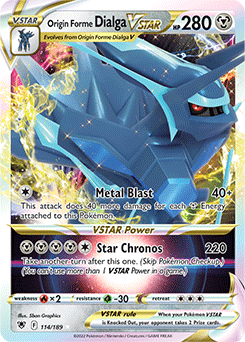
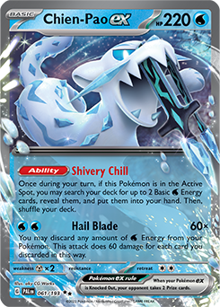

In a shocking turn of events, the off-meta Dialga VStar deck piloted by Andrew Hedrick came out on top. The deck has a tough matchup into Charizard, but fortunately for Andrew the top 8 was inundated with Chien-Pao and only one Charizard to be seen. Andrew piloted the Dialga VStar deck excellently, being very patient with his Star Cronos VStar power usage until it was absolutely necessary. Will this success with Dialga be replicated in future tournaments, or was it a one time fluke?
Clearly, many were expecting Charizard to be the top used deck in the tournament. Chien-Pao was a meta call to this due to its great Charizard match-up. Chien-Pao came in the number two spot in deck usage for both day 1 and day 2 usage. Perhaps most incredibly of all, it had a fantastic rate going into top 8 with 4 of the decks being a Chien-Pao deck.
Top 8:
| Charizard EX | Chien-Pao | Lost Zone Giratina | Arceus VStar/Giratina VStar | Ancient Box | Lugia | Gardevoir | |
|---|---|---|---|---|---|---|---|
| Day 1 | 24.14% | 11.92% | 6.73% | 6.30% | 5.57% | 4.89% | N/A |
| Day 2 | 26.53% | 12.24% | 5.71% | 7.35% | N/A | 5.71% | 6.94% |